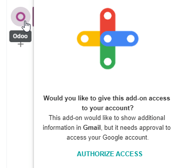
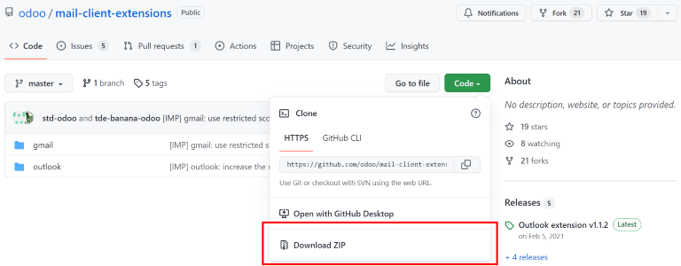

Gmail Plugin¶
The Gmail Plugin integrates an Odoo database with a Gmail inbox, so users can keep track of all their work between Gmail and Odoo, without losing any information.
Odoo Online users¶
For databases hosted on Odoo Online (or Odoo.sh), follow the steps below to configure the Gmail Plugin.
Install the Gmail Plugin¶
First, log in to the Gmail account that the user wishes to connect to Odoo.
From the Gmail inbox, click the plus sign icon on the right side panel to get add-ons. If the side panel is not visible, click on the arrow icon at the bottom right corner of the inbox to reveal it.

Then, use the search bar to search for Odoo and locate the Odoo Inbox Addin.
Or, go directly to the Odoo Inbox Addin page on the Google Workspace Marketplace.
Once the plugin is located, click Install. Then, click Continue to start the installation.
Next, select which Gmail account the user wishes to connect to Odoo. Then click Allow to let Odoo access the Google account. Google will then show a pop-up window confirming that the installation was successful.
Configure the Odoo database¶
The Mail Plugin feature must be enabled in the Odoo database in order to use the Gmail Plugin. To enable the feature, go to . Under the Integrations section, activate Mail Plugin, and then click Save.

Configure the Gmail inbox¶
In the Gmail inbox, a purple Odoo icon is now visible on the right side panel. Click on the Odoo icon to open up the Odoo plugin window. Then, click on any email in the inbox. Click Authorize Access in the plugin window to grant Odoo access to the Gmail inbox.
Next, click Login. Then, enter the URL of the Odoo database that the user wishes to connect to the Gmail inbox, and log in to the database.
Note
Use the general URL for the database, not the URL of a specific page in the database. For
example, use https://mycompany.odoo.com, not
https://mycompany.odoo.com/web#cids=1&action=menu.
Finally, click Allow to let Gmail access the Odoo database. The browser will then show a Success! message. After that, close the window. The Gmail inbox and Odoo database are now connected.
Odoo On-Premise users¶
For databases hosted on servers other than Odoo Online (or Odoo.sh), follow the steps below to configure the Gmail Plugin.
Note
As part of their security guidelines, Google requires add-on creators to provide a list of URLs that can be used in actions and redirections launched by the add-on. This protects users by ensuring, for example, that no add-on redirects users toward a malicious website. (Read more on Google Apps Script.)
Since Odoo can only list the odoo.com domain and not every on-premise customer’s unique server
domain, on-premise customers cannot install the Gmail Plugin from the Google Workspace
Marketplace.
Install the Gmail Plugin¶
First, access the GitHub repository for the Odoo Mail Plugins. Next, click on the green Code button. Then, click Download ZIP to download the Mail Plugin files onto the user’s computer.
Open the ZIP file on the computer. Then, go to , and open the login.ts file using any text editor software,
such as Notepad (Windows), TextEdit (Mac), or Visual Studio Code.
Delete the following three lines of text from the login.ts file:
if (!/^https:\/\/([^\/?]*\.)?odoo\.com(\/|$)/.test(validatedUrl)) {
return notify("The URL must be a subdomain of odoo.com");
}
This removes the odoo.com domain constraint from the Gmail Plugin program.
Next, in the ZIP file, go to , and open the
file called appsscript.json. In the urlFetchWhitelist section, replace all
the references to odoo.com with the Odoo customer’s unique server domain.
Then, in the same gmail folder, open the file called README.md. Follow the instructions in the README.md file to push the Gmail Plugin files as a Google Project.
Note
The computer must be able to run Linux commands in order to follow the instructions on the README.md file.
After that, share the Google Project with the Gmail account that the user wishes to connect to Odoo. Then, click Publish and Deploy from manifest. Lastly, click Install the add-on to install the Gmail Plugin.
Configure the Odoo database¶
The Mail Plugin feature must be enabled in the Odoo database in order to use the Gmail Plugin. To enable the feature, go to . Under the Integrations section, activate Mail Plugin, and then click Save.
Configure the Gmail inbox¶
In the Gmail inbox, a purple Odoo icon is now visible on the right side panel. Click on the Odoo icon to open up the Odoo plugin window. Then, click on any email in the inbox. Click Authorize Access in the plugin window to grant Odoo access to the Gmail inbox.
Next, click Login. Then, enter the URL of the Odoo database that the user wishes to connect to the Gmail inbox, and log in to the database.
Note
Use the general URL for the database, not the URL of a specific page in the database. For
example, use https://mycompany.odoo.com, not
https://mycompany.odoo.com/web#cids=1&action=menu.
Finally, click Allow to let Gmail access the Odoo database. The browser will then show a Success! message. After that, close the window. The Gmail inbox and Odoo database are now connected.